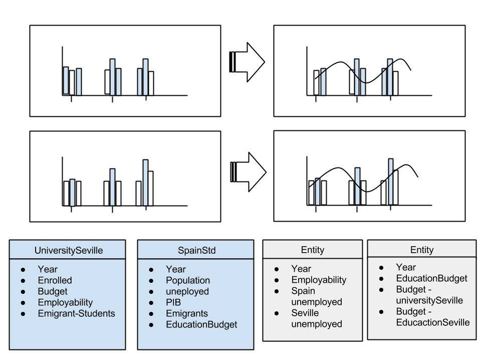
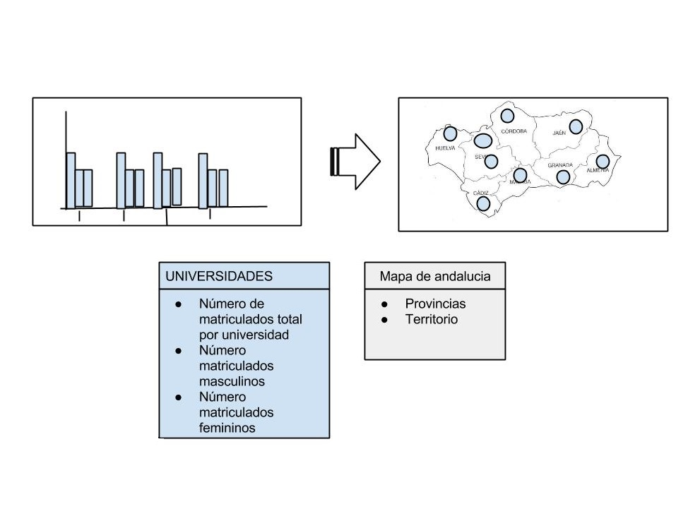

Trabajo SOS grupo 3
Compenentes del grupo
Rocio Buzon Ibañez
Jennifer Guerrero Sanchez
David Lopez Carrascal
Accede a nuestro trabajo en :
Portal Opera
Gráficos


Accede a nuestros Servlets
Servlet de Jenny
Servlet de David
Servlet de Rocio